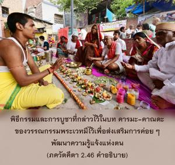
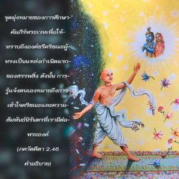
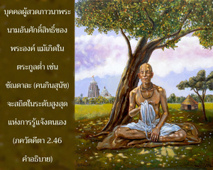
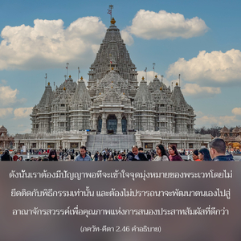

ความปรารถนาทั้งหลายที่ได้มาจากบ่อน้ำเล็กๆ แหล่งน้ำที่ใหญ่จะสามารถตอบสนองได้ในทันที ในทำนองเดียวกันความปรารถนาทั้งปวงในคัมภีร์พระเวทนั้นจะสามารถได้รับการสนองตอบโดยผู้ที่รู้จุดมุ่งหมายอันแท้จริง




พิธีกรรมและการบูชาที่กล่าวไว้ในบท กรฺม-กาณฺฑ ของวรรณกรรมพระเวทมีไว้เพื่อส่งเสริมการค่อยๆ พัฒนาความรู้แจ้งแห่งตน และจุดมุ่งหมายของการรู้แจ้งแห่งตนเองได้กล่าวไว้อย่างชัดเจนในบทที่สิบห้าของ ภควัท-คีตา (15.15) ว่าจุดมุ่งหมายของการศึกษาคัมภีร์พระเวทนั้นเพื่อให้ทราบถึงองค์ศฺรีกฺฤษฺณ ผู้ทรงเป็นแหล่งกำเนิดแรกของสรรพสิ่ง ดังนั้น การรู้แจ้งตนเอง หมายถึง การเข้าใจองค์กฺฤษฺณ และความสัมพันธ์นิรันดรที่เรามีต่อพระองค์ ความสัมพันธ์ของสิ่งมีชีวิตที่มีต่อองค์กฺฤษฺณได้กล่าวไว้ในบทที่สิบห้าของ ภควัท-คีตา (15.7) เช่นกันว่า สิ่งมีชีวิตเป็นละอองอณูขอองค์กฺฤษฺณ ฉะนั้น การฟื้นฟูกฺฤษฺณจิตสำนึกของปัจเจกชีวิตจึงเป็นระดับที่สมบูรณ์สูงสุดของวิชาพระเวท ศฺรีมทฺ-ภาควตมฺ (3.33.7) ได้ยืนยันไว้ดังต่อไปนี้
อโห พต ศฺว-ปโจ ’โต ครียานฺ
ยชฺ-ชิหฺวาเคฺร วรฺตเต นาม ตุภฺยมฺ
เตปุสฺ ตปสฺ เต ชุหุวุห์ สสฺนุรฺ อารฺยา
พฺรหฺมานูจุรฺ นาม คฺฤณนฺติ เย เต
“โอ้ องค์ภควานฺ บุคคลผู้สวดภาวนาพระนามอันศักดิ์สิทธิ์ของพระองค์แม้เกิดในตระกูลต่ำ เช่น จณฺฑาล (คนกินสุนัข) จะสถิตในระดับสูงสุดแห่งการรู้แจ้งตนเอง บุคคลเช่นนี้ต้องปฏิบัติการบำเพ็ญเพียร และการบูชานานัปการตามพิธีกรรมพระเวท และศึกษาวรรณกรรมพระเวทมาแล้วหลายต่อหลายครั้ง หลังจากได้อาบน้ำในสถานที่อันศักดิ์สิทธิ์ทุกแห่งของนักบุญ บุคคลนี้พิจารณาว่าดีที่สุดในครอบครัว อารฺยนฺ”
ดังนั้น เราต้องมีปัญญาพอที่จะเข้าใจจุดมุ่งหมายของพระเวทโดยไม่ยึดติดกับพิธีกรรมเท่านั้น และต้องไม่ปรารถนาจะพัฒนาตนเองไปสู่อาณาจักรสวรรค์เพื่อคุณภาพแห่งการสนองประสาทสัมผัสที่ดีกว่า เป็นไปไม่ได้สำหรับคนธรรมดาทั่วไปในยุคนี้ที่จะปฏิบัติตามกฎเกณฑ์ทั้งหมดในพิธีกรรมพระเวท หรือจะศึกษา เวทานฺต และ อุปนิษทฺ อย่างละเอียดถี่ถ้วนเพราะต้องใช้เวลา พลังงาน ความรู้ และทรัพยากรอย่างมากมายเพื่อปฏิบัติตามจุดมุ่งหมายต่างๆ ของพระเวท จึงเป็นไปได้ยากมากในยุคนี้ อย่างไรก็ดี จุดประสงค์ที่ดีที่สุดของวัฒนธรรมพระเวทสามารถตอบสนองได้ด้วยการสวดภาวนาพระนามอันศักดิ์สิทธิ์ขององค์ภควานฺ ดังที่ได้แนะนำโดยองค์ ไจตนฺย ผู้จัดส่งมวลวิญญาณที่ตกต่ำ เมื่อนักวิชาการพระเวทผู้ยิ่งใหญ่ ชื่อ ปฺรกาศานนฺท สรสฺวตี ถามองค์ ไจตนฺย ว่าทำไมมาสวดภาวนาพระนามอันศักดิ์สิทธิ์ขององภควานฺเหมือนเป็นคนเจ้าอารมณ์ แทนที่จะไปศึกษาปรัชญา เวทานฺต องค์ ไจตนฺย ทรงตอบว่าพระอาจารย์เห็นว่าพระองค์ทรงเบาปัญญายิ่งนัก ท่านจึงขอร้องให้ไปสวดภาวนาพระนามอันศักดิ์สิทธิ์ขององค์ศฺรีกฺฤษฺณ พระองค์จึงทรงทำตามและมีความปลื้มปีติสุขเหมือนคนเสียสติ ใน กลิ ยุคนี้ประชาชนส่วนใหญ่เบาปัญญาและไม่พร้อมที่จะศึกษาและเข้าใจปรัชญา เวทานฺต จุดประสงค์ที่ดีที่สุดของปรัชญา เวทานฺต จะได้รับการตอบสนองด้วยการสวดภาวนาพระนามอันศักดิ์สิทธิ์ขององค์ภควานฺอย่างไร้อาบัติ เวทานฺต เป็นคำสุดท้ายของปรัชญาพระเวท ผู้เขียนและผู้รู้ปรัชญาเวทานฺต คือ องค์ ศฺรี กฺฤษฺณ และ นักเวทานฺต สูงสุด คือ ดวงวิญญาณผู้ยิ่งใหญ่ที่มีความสุขในการสวดภาวนาพระนามอันศักดิ์สิทธิ์ขององค์ภควานฺ นี่คือจุดมุ่งหมายสูงสุดแห่งความเร้นลับของคัมภีร์พระเวททั้งหมด